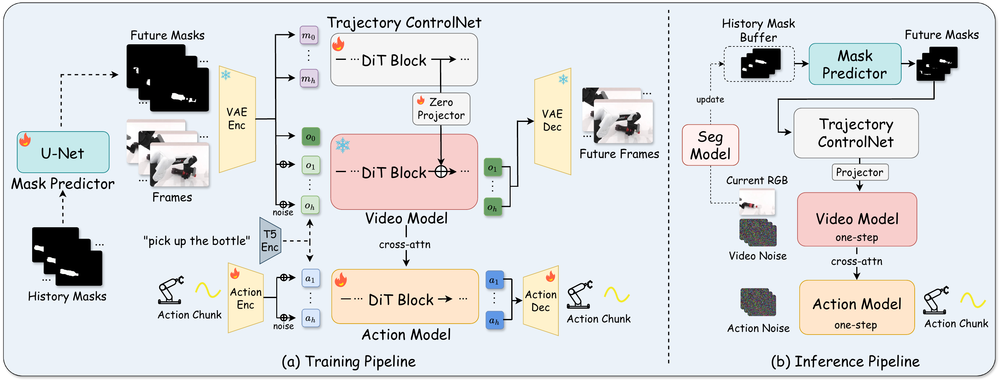
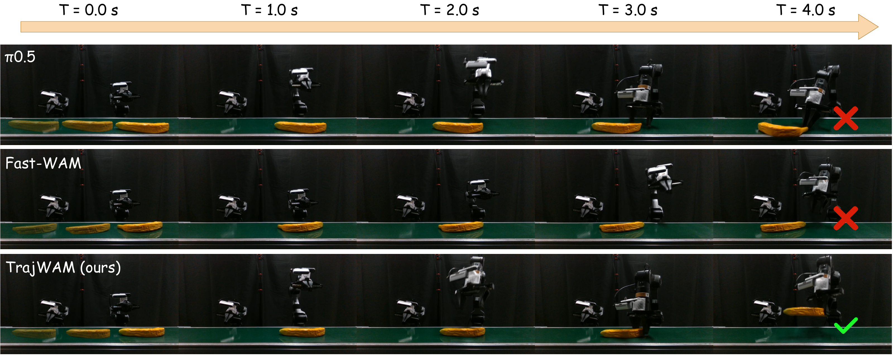

Abstract
Dynamic object manipulation requires robots to anticipate target motion while replanning fast enough to avoid executing outdated actions. Existing approaches either rely on fast reactive control without an explicit future target state or encode anticipated motion only implicitly. World Action Models (WAMs) offer a promising alternative by coupling future visual prediction with action generation, but scene-level video objectives may underrepresent target dynamics that are critical for manipulation, while iterative video-action denoising introduces substantial latency. We present TrajWAM, a trajectory-guided world action model for efficient dynamic robotic manipulation. Our key insight is to explicitly ground future visual imagination in predicted target-object motion and use the resulting future representation to condition action generation, while preserving this anticipation pathway after acceleration. Given a short history of object masks, a history-conditioned motion predictor forecasts future masks encoding the target object’s trajectory. A lightweight Trajectory ControlNet then steers a pretrained video model toward trajectory-consistent futures. The resulting future representation conditions an action expert to predict executable action chunks. To enable one-step inference without breaking this interface, we introduce a decoupled distillation scheme that combines distribution matching for the video backbone, Trajectory ControlNet realignment, and action rollout distillation to support accurate one-step action prediction conditioned on the compressed future representation. Comprehensive evaluations in simulation and the real world show that TrajWAM achieves state-of-the-art performance on dynamic object manipulation tasks while enabling efficient one-step video-action inference.
Method

Given a short history of object masks, a history-conditioned motion predictor forecasts future masks encoding the target object's trajectory. Trajectory ControlNet injects this trajectory into a pretrained video model, steering its predictions toward trajectory-consistent futures. An action expert conditions on the resulting visual representation to generate executable action chunks.
To accelerate inference, we use a decoupled distillation scheme consisting of distribution matching for the video backbone, Trajectory ControlNet realignment, and action rollout distillation. The resulting model performs one-step inference for both video and action generation.
Results
Simulation on DOMINO
Across 35 dynamic manipulation tasks, TrajWAM achieves the highest success rate (43.54%) and manipulation score (54.07). Compared with InternVLA-A1.5, it improves success rate by 14.24 percentage points and manipulation score by 11.57, while reducing inference latency from 552.2 ms to 108.5 ms.
| Method | SR (%) ↑ | MS ↑ | Latency (ms) |
|---|---|---|---|
| OpenVLA | 1.54 | 6.10 | 173.6 |
| π0-FAST | 3.54 | 20.87 | 119.9 |
| VLA-Adapter | 4.40 | 24.31 | 83.6 |
| RDT-1B | 5.34 | 17.71 | 246.3 |
| InternVLA-M1 | 5.40 | 27.57 | 183.8 |
| Isaac-GR00T | 6.10 | 28.60 | 76.4 |
| π0 | 8.17 | 23.96 | 52.9 |
| OpenVLA-OFT | 9.06 | 24.06 | 83.1 |
| π0.5 | 9.63 | 26.17 | 59.1 |
| PUMA | 17.20 | 34.97 | 85.4 |
| Fast-WAM | 21.97 | 37.27 | 183.7 |
| InternVLA-A1.5 | 29.30 | 42.50 | 552.2 |
| TrajWAM (ours) | 43.54 | 54.07 | 108.5 |
SR is task success rate; MS is DOMINO's continuous manipulation score. Latency is per inference.
Real-world dynamic grasping
TrajWAM succeeds in 187/240 conveyor-belt trials (77.9%) and 169/240 rotating-disc trials (70.4%). Each object-speed combination has 20 trials, and a trial succeeds only when the object is grasped and lifted.
| Method | Low speed | Medium speed | High speed | Overall | ||||||||||
|---|---|---|---|---|---|---|---|---|---|---|---|---|---|---|
| Banana | Bottle | Tape | Plush toy | Banana | Bottle | Tape | Plush toy | Banana | Bottle | Tape | Plush toy | Succ. | SR (%) | |
| Conveyor belt | ||||||||||||||
| π0.5 | 15/20 | 18/20 | 13/20 | 19/20 | 9/20 | 10/20 | 8/20 | 16/20 | 3/20 | 0/20 | 5/20 | 14/20 | 130/240 | 54.2 |
| Fast-WAM | 14/20 | 6/20 | 11/20 | 18/20 | 5/20 | 2/20 | 3/20 | 8/20 | 1/20 | 0/20 | 1/20 | 2/20 | 71/240 | 29.6 |
| TrajWAM (ours) | 18/20 | 16/20 | 15/20 | 20/20 | 16/20 | 13/20 | 18/20 | 19/20 | 11/20 | 7/20 | 16/20 | 18/20 | 187/240 | 77.9 |
| Rotating disc | ||||||||||||||
| π0.5 | 12/20 | 5/20 | 8/20 | 17/20 | 6/20 | 4/20 | 11/20 | 15/20 | 5/20 | 0/20 | 10/20 | 13/20 | 106/240 | 44.2 |
| Fast-WAM | 4/20 | 1/20 | 6/20 | 16/20 | 2/20 | 2/20 | 9/20 | 14/20 | 1/20 | 0/20 | 2/20 | 10/20 | 67/240 | 27.9 |
| TrajWAM (ours) | 14/20 | 11/20 | 16/20 | 18/20 | 12/20 | 13/20 | 12/20 | 17/20 | 12/20 | 10/20 | 15/20 | 19/20 | 169/240 | 70.4 |
Cells show successful grasps out of 20 trials. Across both tasks, TrajWAM succeeds in 356/480 trials (74.2%), compared with 49.2% for π0.5 and 28.8% for Fast-WAM.
Under high-speed motion, TrajWAM achieves success rates of 65.0% on conveyor-belt grasping and 70.0% on rotating-disc grasping, exceeding π0.5 by 37.5 and 35.0 percentage points, respectively.
Qualitative comparison

Real-world conveyor-belt grasping comparison. TrajWAM anticipates the target object's motion and successfully grasps it, while the baseline methods fail in this sequence.
BibTeX
@misc{geng_trajwam,
title = {TrajWAM: An Efficient Trajectory-Guided World Action Model for Dynamic Robotic Manipulation},
author = {Geng, Haohan and Zhang, Sha and Sun, Weishuo and Ye, Guanting and Yu, Wenhao and Xie, Yuang and Zeng, Qicheng and Ye, Peng and Deng, Jiajun and Ji, Jianmin},
note = {Manuscript}
}